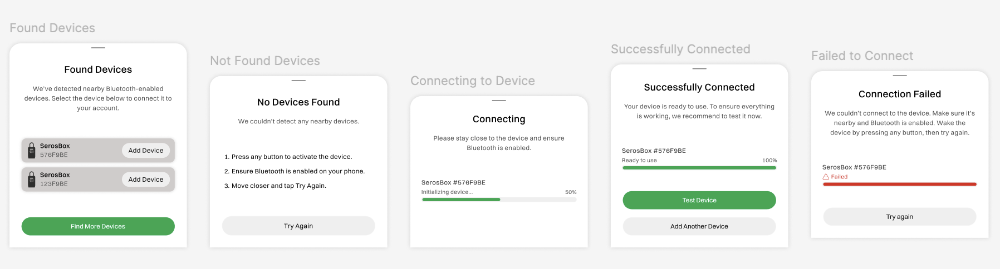

Seros mobile application
Context
The product needed a mobile experience for managing and verifying smart lock access: device details, code flows, and scheduling (hourly, multi-day, vacation) without overwhelming users who are often on the move.

Goals
From product requirements, the design had to:
- keep a calm neutral base with one confident primary action color
- make unlock, codes, and schedules scannable in a few seconds
- scale from a single device to many properties without clutter

Approach
I worked from scratch with stakeholders to turn requirements into flows, then iterated on typography, spacing, and component patterns until the UI felt obvious for first-time and power users alike.
The experience was organized around one clear job at a time:
Generating an access code should be fast and effortless — and the user should always feel confident that access is controlled and won't end up in the wrong hands.
Key directions included:
- device-first hierarchy with secondary actions tucked behind clear affordances
- scheduling patterns that read as timelines, not spreadsheets
- consistent feedback when codes change or access ends
- proactive battery monitoring — rather than polling the device continuously, the app estimates remaining runtime and surfaces a warning early enough to act, without draining the user's phone


Outcomes
The mobile interface was designed and shipped from scratch — from early flows and wireframes through final UI and handoff. The app launched with full support for device management, access code flows, and flexible scheduling across single and multi-property setups.